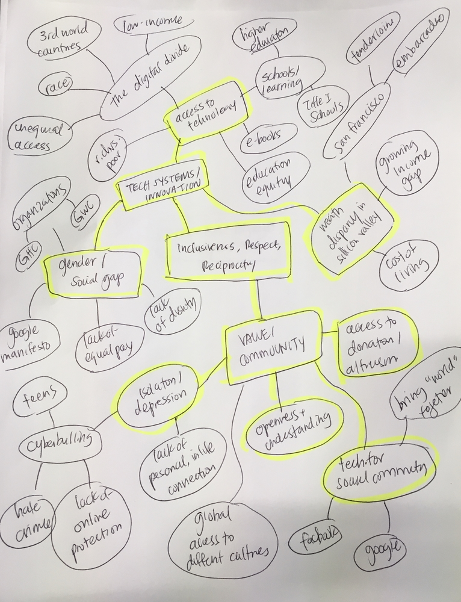

Cynthia Chen Back Home
This mind map helped me group the top two topics I was most interested in—Tech / Innovation and Value / Community as well as the specific subtopics within those broad range of options. There were all sorts of things I came up with—some found from online reading, background knowledge, or even personal experience—and in terms of the ideas that I've written down, I'm most interested in Tech Systems / Wealth Disparty in SV, Tech Systems / Access to Technology, and Value / Community / Access to Donations + Altruism in the Digital Age. I'm pretty torn between these topics, as they're all interesting and so much research can be done about each!
